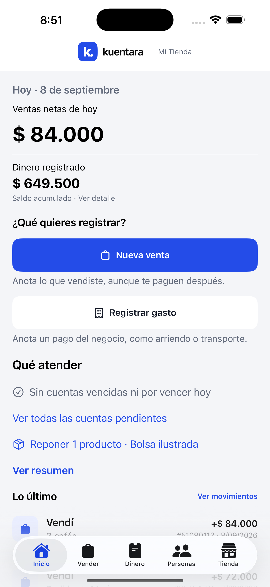

Productos e inventario
Organiza el catálogo y las existencias para consultar los productos de tu negocio.
Tu negocio, en un solo lugar. Organiza productos, inventario, ventas, gastos y cuentas por cobrar, incluso sin conexión.

La operación diaria de un pequeño negocio necesita información conectada: qué se vende, qué queda y cuánto falta por cobrar.
Organiza el catálogo y las existencias para consultar los productos de tu negocio.
Registra la actividad del negocio y reúne ingresos y gastos en una misma herramienta.
Mantén a la vista las cuentas pendientes para dar seguimiento a lo que te deben.
La captura muestra la interfaz para iPhone. Este portafolio presenta el producto; para consultas sobre acceso y disponibilidad, escribe al soporte de Kuentara.
kuentara@steevin.com